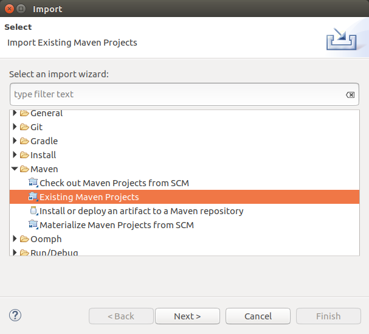
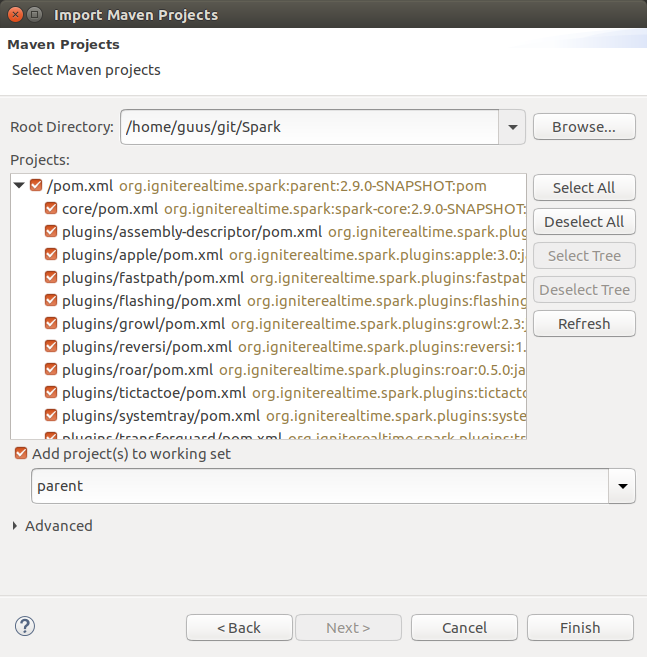
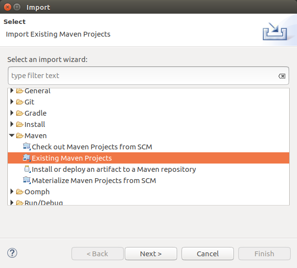
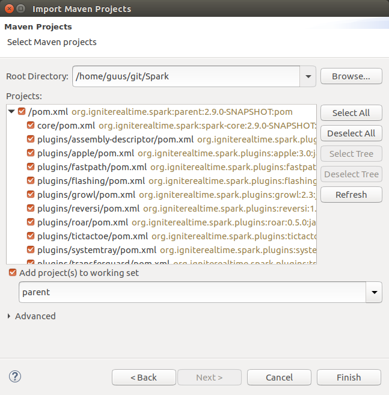

Spark source code in Eclipse IDE
This is a short tutorial on how to load the Spark source code in the Eclipse IDE.
Eclipse is very versatile, and offers many options that are not explored in this guide. Instead, this guide focuses on the bare minimum that is needed to get started.
Prepare your environment
This guide assumes that you have Eclipse installed, and have a copy of the source code available locally. Additionally, a Java Development Kit (version 8) should be installed.
Start by creating a new, empty workspace.
Create a project and import the source code
The Spark source code is using an Apache Maven project structure. As Eclipse recognizes this structure, importing the source code into an Eclipse project is very easy.
The 'import' option (in the 'file' menu) can be used to quickly import the Spark source code into a new Eclipse project.
 



Using the 'import' option, select the option that allows you to import an existing Maven project into your Eclipse project. Then, select the directory in which the Spark source code is stored.
Eclipse will automatically recognize and process the Maven structure of Spark, as soon as it is pointed to the correct directory. It will immediately display the hierarchy of modules as a result.
Once the import wizard has been closed, the Eclipse workspace will show all modules that are part of Spark. That's all to it! You're ready to start working on the code now!
Run Spark from Eclipse
When developing, it is often useful to run the code straight from your IDE. The following will explain how you can start a Spark instance from the code that is in the Eclipse workspace.
The 'spark-core' module contains a class named Startup (in the org.jivesoftware.launcher
package) that can be used to start Spark. Find the class in the Eclipse Package Explorer, and open its context
menu (right-click on the file). In that menu, use the 'Run as Java Application' option. Eclipse wil start
to build Spark from the source code, after which Spark itself is started. If everything goes well, you will
see the Spark login screen within a matter of seconds!